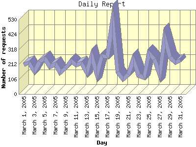

Report generated by Analog 6.0 and Report Magic 2.21
|
Web Server Statistics for "Harish Narayanan (hnarayan) - March 2005" Report generated by Analog 6.0 and Report Magic 2.21 |
The Daily Report identifies the activity for each day within the reporting period. Remember that one page hit can result in several server requests as the images for each page are loaded.

| Day | Number of requests | Number of bytes transferred | Percentage of the bytes | Percentage of the requests | |
|---|---|---|---|---|---|
| 1. | March 1, 2005 | 210 | 7.998 MB | 3.04% | 3.08% |
| 2. | March 2, 2005 | 223 | 7.647 MB | 2.91% | 3.28% |
| 3. | March 3, 2005 | 159 | 4.232 MB | 1.61% | 2.33% |
| 4. | March 4, 2005 | 231 | 7.230 MB | 2.75% | 3.39% |
| 5. | March 5, 2005 | 253 | 12.467 MB | 4.74% | 3.72% |
| 6. | March 6, 2005 | 196 | 8.965 MB | 3.41% | 2.88% |
| 7. | March 7, 2005 | 211 | 6.440 MB | 2.45% | 3.10% |
| 8. | March 8, 2005 | 155 | 6.008 MB | 2.28% | 2.28% |
| 9. | March 9, 2005 | 184 | 4.601 MB | 1.75% | 2.70% |
| 10. | March 10, 2005 | 238 | 9.017 MB | 3.43% | 3.50% |
| 11. | March 11, 2005 | 206 | 6.711 MB | 2.55% | 3.03% |
| 12. | March 12, 2005 | 218 | 8.511 MB | 3.23% | 3.20% |
| 13. | March 13, 2005 | 153 | 7.095 MB | 2.70% | 2.25% |
| 14. | March 14, 2005 | 272 | 9.963 MB | 3.79% | 4.00% |
| 15. | March 15, 2005 | 140 | 7.645 MB | 2.91% | 2.06% |
| 16. | March 16, 2005 | 271 | 46.318 MB | 17.60% | 3.98% |
| 17. | March 17, 2005 | 266 | 5.482 MB | 2.08% | 3.91% |
| 18. | March 18, 2005 | 523 | 9.326 MB | 3.54% | 7.68% |
| 19. | March 19, 2005 | 156 | 4.156 MB | 1.58% | 2.29% |
| 20. | March 20, 2005 | 105 | 3.979 MB | 1.51% | 1.54% |
| 21. | March 21, 2005 | 141 | 4.978 MB | 1.89% | 2.07% |
| 22. | March 22, 2005 | 245 | 9.278 MB | 3.53% | 3.60% |
| 23. | March 23, 2005 | 134 | 4.696 MB | 1.78% | 1.97% |
| 24. | March 24, 2005 | 118 | 4.534 MB | 1.72% | 1.73% |
| 25. | March 25, 2005 | 288 | 7.958 MB | 3.02% | 4.23% |
| 26. | March 26, 2005 | 249 | 6.629 MB | 2.52% | 3.66% |
| 27. | March 27, 2005 | 140 | 1.003 MB | 0.38% | 2.06% |
| 28. | March 28, 2005 | 400 | 7.032 MB | 2.67% | 5.88% |
| 29. | March 29, 2005 | 262 | 9.879 MB | 3.75% | 3.85% |
| 30. | March 30, 2005 | 222 | 9.974 MB | 3.79% | 3.26% |
| 31. | March 31, 2005 | 239 | 13.362 MB | 5.08% | 3.51% |
Most active day March 28, 2005 : 261 pages sent. 523 requests handled. 9,778,667.00 served.
Daily average: 219 requests handled. 8.488 MB served.
This report was generated on April 10, 2005 14:07.
Report time frame March 1, 2005 00:01 to March 31, 2005 23:55.
| Web statistics report produced by: | |
 Analog 6.0 Analog 6.0 |  Report Magic 2.21 Report Magic 2.21 |